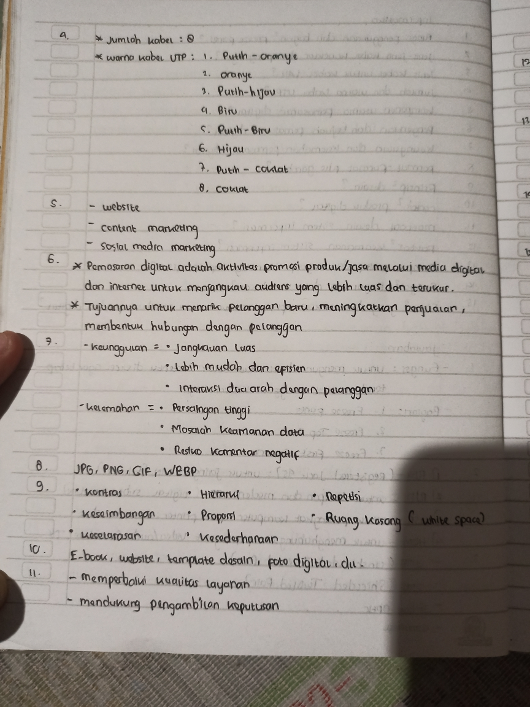
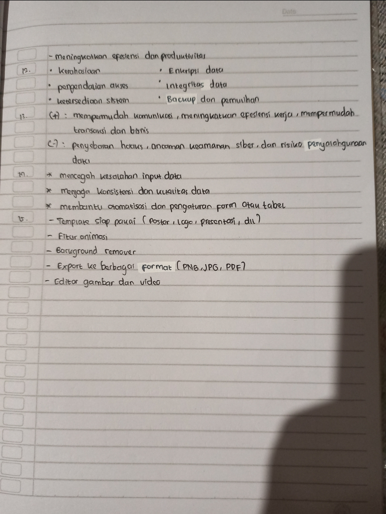
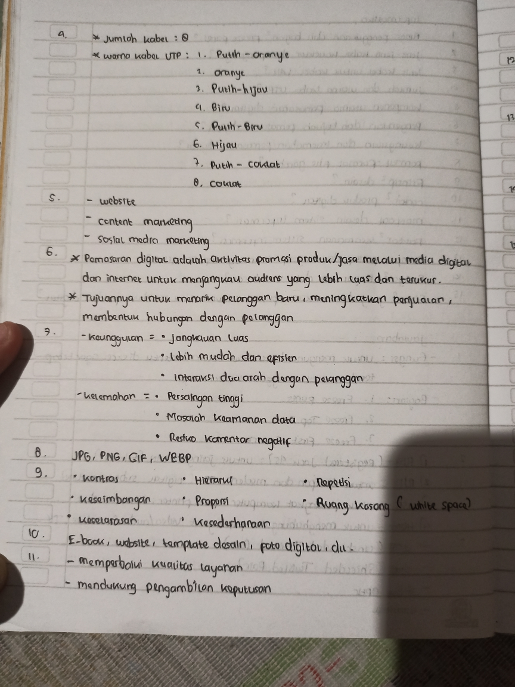
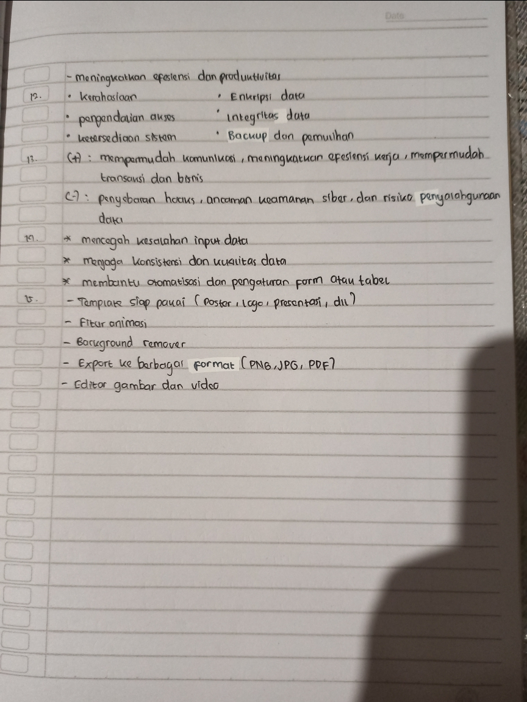

A. Vernakular
B. Formal
C. Fungsional
D. Perseptual
E. Homogen
A. Menentukan aglomerasi wilayah
B. Mencari wilayah yang berbeda
C. Menyebarkan dan meratakan pembangunan
D. Menjamin keserasian di tiap-tiap daerah
E. Untuk meratakan pembangunan di semua wilayah
A. Terus berkembang dengan lebih baik daripada wilayah lain di sekitarnya
B. Mengalami pertumbuhan lancar dan tidak memengaruhi wilayah lain di sekitarnya
C. Memiliki kegiatan perekonomian yang beraneka ragam dan beraktifitas tanpa henti
D. Mengalami perkembangan yang sangat pesat dan mempengaruhi wilayah sekitarnya
E. Saling berkembang dan berhubungan dengan wilayah-wilayah lain di sekitarnya
A. Mengeksploitasi sumber daya alam daerah tertentu
B. Memfokuskan pembangunan pada wilayah tertentu
C. Melahirkan wilayah maju yang berimbas pada daerah sekitar
D. Mengalihkan pusat orientasi dari satu kota ke kota lain
E. Merangsang perpindahan penduduk dari daerah miskin
A. Pemerintah berusaha untuk meningkatkan infrastruktur umum di berbagai daerah
B. Banyak organisasi masyarakat memiliki tujuan untuk mengawasi jalannya pemerintahan
C. Peningkatan pendidikan masyarakat menyebabkan peningkatan kualitas SDM
D. Pengembangan budaya lokal yang dapat mendorong perkembangan ekonomi bangsa
E. Pusat-pusat pelatihan didirikan agar masyarakat dapat bersaing dengan tenaga asing
A. 1),2), dan 3)
B. 1),2), dan 4)
C. 1),3), dan 5)
D. 2),3), dan 4)
E. 3),4), dan 5)
A. Tryanopolis
B. Eopolis
C. Megalopolis
D. Polis
E. Metropolis
A. Kawasan industri dan perdagangan
B. Daerah pusat kegiatan dan permukiman kelas bawah
C. Daerah peralihan dan penglaju
D. Permukiman kelas menengah dan daerah pusat kegiatan
E. Pusat kegiatan dan permukiman kelas buruh
A. 1
B. 2
C. 3
D. 4
E. 5
A. Lahan kosong untuk area bermain
B. Tata ruang didominasi untuk kegiatan sosial
C. Pengaturan orang mudah diubah sesuai kebutuhan
D. Tataguna lahan didominasi untuk pertanian dan industri
E. Terdapat permukiman berdasarkan kelas sosial ekonomi
A. Penyedia hasil pertanian
B. Penyedia tenaga kerja
C. Penyedia alat produksi pertanian
D. Tempat produksi bahan baku
E. Lumbung bahan mentah
A. Jumlah barang dari desa yang dijual ke kota meningkat
B. Penduduk kota yang mencari kerja didesa meningkat
C. Gedung-gedung bertingkat didesa meningkat
D. Pasar tradisional dikota meningkat
E. Pusat pertokoan dibangun diluar kota meningkat
A. Tradisonal
B. Swasembada
C. Swadaya
D. Maju
E. Swakarya
A. Analisis perluasan jaringan transportasi
B. Analisis kawasan rawan kemacetan
C. Menyusun konsep pemekaran wilayah
D. Penentuan lokasi penambangan
E. Menyusun rencana pelaksanaan teknis
A. (1),(2), dan (3)
B. (1),(2), dan (4)
C. (1),(3), dan (5)
D. (2),(4), dan (5)
E. (3),(4), dan (5)
A. Mata pencaharian heterogen
B. Pemanfaatan lahan untuk permukiman
C. Adanya adat istiadat masih mengikat
D. Ruang kerja tertutup dan terbatas
E. Kelembagaan sangat kompleks
A. Tradisonal
B. Swadaya
C. Terbelakang
D. Swasembada
E. Swakarya
A. Swasembada
B. Tradisonal
C. Swakarya
D. Swadaya
E. Terbelakang
A. Karst
B. Lembah sungai
C. Pertanian
D. Dataran pantai
E. Lereng gunung
A. Mitra pembangunan kota
B. Desa sebagai penghasil tenaga kerja ahli
C. Pemberi modal untuk pembangunan
D. Pemasok kebutuhan pokok bagi kota
E. Tempat industri dibidang jasa
A. Tata kehidupan, wilayah, dan penduduk
B. wilayah, penduduk, dan adat istiadat
C. Tata kehidupan, lembaga desa, dan aparat desa
D. Penduduk, aparat desa, dan tata kehidupan
E. aparat desa, lembaga desa, dan penduduk
A. (1) dan (2)
B. (1) dan (3)
C. (2) dan (3)
D. (2) dan (4)
E. (3) dan (4)
A. Pandangan hidup masyarakat tidak rasional
B. Pola kehidupan masyarakat sehari-hari bergantung pada cuaca
C. Terdapat tempat rekreasi dan olahraga
D. Pola pikir masyarakat cenderung masih tradisional
E. Terjadi kesenjangan sosial antar golongan masyarakat
A. Eopolis
B. Polis
C. Megalopolis
D. Necropolis
E. Tiranopolis
A. Adanya upaya lembaga pendidikan komputer dikota
B. Pembangunan sarana transportasi didesa
C. Komunikasi yang lancar dan cepat dikota
D. Upah kerja dikota lebih tinggi
E. Pemindahan modal desa ke kota
A. Meningkatkan produktivitas desa
B. Memudahkan akses jalan
C. Meningkatkan keinginan bekerja masyarakat
D. Melancarkan arus perdagangan
E. Memajukan kota disekitarnya
A. Desa sebagai sumber tenaga kerja bagi kota
B. Desa sebagai sumber bahan makanan bagi kota
C. Desa sebagai lumbung bahan mentah bagi kota
D. Desa menyerap teknologi yang diterapkan dikota
E. Desa menjadi wilayah pemekaran dari kota
A. Transisi
B. Tradisonal
C. Swadaya
D. Swakarsa
E. Swasembada
A. 1), 2), dan 3)
B. 1), 2), dan 4)
C. 1), 3), dan 5)
D. 2), 3), dan 4)
E. 2), 4), dan 5)
A. Masyarakat desa menjadi konsumtif
B. Banyaknya slum area
C. Pemuda desa banyak meniru perilaku orang kota
D. Berkurangnya tenaga profisional
E. Pekerjaan didesa semakin beragam
A. (1),(2), dan (3)
B. (1),(4), dan (5)
C. (2),(3), dan (5)
D. (3),(5), dan (6)
E. (4),(5), dan (6)
Film
Film
Film
DPI(Dots Per Inch) atau titik per inci
PPI(Pixels Per Inch)
- Adobe Illustrator
- CorelDraw
- Canva
- Affinity Designer
Untuk menyederhanakan dan mengkomunikasikan informasi yang kompleks dengan cara yang cepat, jelas, dan efektif menggunakan kombinasi teks,grafik,dan elemen visual
- Visualisasi data (Bagan,Diagram,Peta)
- Tipografi (Jenis huruf dan tata letak teks)
- Ikon dan Ilustrasi
- Warna
- Canva
- PiktoChart
- Visme
- Venngage
- Adobe Illustrator
- Inkscape
Menentukan tujuan dan mengumpulkan data/informasi yang akan disajikan
| Infografis | Gambar Biasa |
|---|---|
| Berisi data,informasi, dan penjelasan visual | Hanya menampilkan visual berupa penjelasan data/informasi |
| Dampak Sosial | Dampak Ekonomi |
|---|---|
| Urbanisasi (Perpindahan Penduduk) | Peningkatan produksi |
| Perubahan gaya hidup | Munculnya industri baru |
| Munculnya kelas pekerja | Efesiensi teknologi |
| Pergeseran pola kerja | Pertumbuhan ekonomi/td> |
| 1.0 | 4.0 |
|---|---|
| Mekanisme dengan mesin uap | Digitalisasi,IoT,AI,Otomatisasi Cerdas |
Kemampuan menggunakan teknologi digital secara aman,bijak,aman, dan produktif. tujuannya untuk mengakses,memahami,membuat,serta membagikan informasi
- Digital Skills (keterampilan)
- Digital Safety (keamanan)
- Digital Ethics (Etika)
- Digital Culture (Budaya)
| Bitmap | Vektor |
|---|---|
| Tersusun dari pixel (Contoh: JPG,PNG) | Tersusun dari garis dan kurva matematis (Contoh: SVG,AI,CDR) |
Kuning (Yellow)
CMYK(Cyan,Magenta,Yellow,Key/Black)
Garis,kurva, dan bentuk yang dibentuk oleh rumus matematis (Paths)
- Statistik
- Timeline
- Proses
- Geografis/Peta
- Perbandingan
- Hirerarki
- Daftar
- Ilustratif
A. Vokalis
B. Penyair
C. Artist
D. Musisi
E. Komponis
A. Irama yang mengagumkan gerak
B. Kesesuaian antara benda
C. Kesatuan antara elemen
D. Kesetimbangan antara elemen
E. Kesederhanaan wujud
A. Perabaan
B. Pandangan
C. Pendengaran
D. Pandangan dan pendengaran
E. Pandangan dan perabaan
A. 1 - ½ - 1 - 1 - 1 - 1 - ½
B. 1 - 1 - ½ - 1 - 1 - 1 - ½
C. 1 - 1 - 1 - ½ - 1 - 1 - ½
D. 1 - 1 - 1 - 1 - ½ - 1 - ½
E. Semua jawaban salah
A. Cello, Sasando, harmonika
B. Bonang, drum, Tifa
C. Gitar, kecapi,bass
D. Siter, Rebab,Conga
E. Piano, Harmonika, Flute
A. Membranophone
B. Chordophone
C. Idiophone
D. Aerophone
E. Electrophone
A. Angklung
B. Gong
C. Kolintang
D. Gitar
E. Triangel
A. Sumatra Barat
B. Kalimantan Timur
C. Betawi
D. Jawa Barat
E. Papua
A. Membranophone
B. Chordophone
C. Idiophone
D. Aerophone
E. Electrophone
A. Pentatonis
B. Minor
C. Mayor
D. Diatonis
E. Semua jawaban salah
A. Ditiup
B. Diambil
C. Dipukul
D. Digesek
E. Didesak
A. Suara
B. Irama
C. Ritma
D. Lagu
E. Musik
A. Solo
B. Duet
C. Trio
D. Kuartet
E. Unisono
A. Instrumen
B. Suara
C. Irama
D. Birama
E. Pernadaan
A. Solo
B. Duet
C. Trio
D. Kuartet
E. Unisono
A. Solo
B. Duet
C. Trio
D. Kuartet
E. Unisono
A. Musik instrumental
B. Musik vocal
C. Musik monofonik
D. Musik polifonik
E. Musik profan
A. Pop
B. Classic
C. Istana
D. Instrumental
E. Rakyat
A. Koreografer
B. Komponis
C. Sinematografi
D. Sutradara
E. Penata musik
A. Not spasi
B. Not mutlak
C. Not garis
D. Not penuh
E. Not tunggal
A. Nada balok
B. Nada diatonis
C. Nada pentatonis
D. Nada modal
E. Nada musik
A. Ke-10
B. Ke-21
C. Ke-12
D. Ke-19
E. Ke-7
A. Musik klasik
B. Musik abad pertengahan
C. Musik kontemporer
D. Musik moderen
E. Musik Reinaisans
A. Musik yang bersifat sementara
B. Musik tradisional yang dikolaborasikan dengan musik barat
C. Musik baru yang berkembang di masyarakat
D. Musik yang memiliki banyak penggemar
E. Musik istimewah
A. Menyusun frase musik
B. Menentukan akor
C. Menciptakan melodi
D. Menentukan bentuk lagu
E. Menentukan nada dasar
A. Band
B. Teori musik
C. Tangga nada dorian
D. Lirik lagu
E. Melodi Lagu
A. Irama
B. Akor/chord
C. Melodi
D. Nada
E. Ritme
A. Waldjinah
B. Mus Mulyadi
C. Mus Mujiono
D. Sundari Soekotjo
E. Gesang
A. Mempunyai wawasan musikal
B. Bisa menyanyikan lagu dengan baik
C. Mempunyai minat menulis
D. Mempunyai blog musik
E. Bisa bermain alat musik
A. Membaca musik
B. Menulis musik
C. Mencatat musik
D. Kritik musik
E. Evaluasi musik
A. Musik sebagai bunyi yang mempunyai suara tunggal
B. Bunyi tanpa irama bukan musik
C. Bunyi yang mempunyai irama dan melodilah yang bisa disebutkan sebagai musik
D. Musik cuman bisa didengarkan bila ada bunyi
E. Musik tidak membutuhkan bunyi untuk didengarkan
A. Kayu
B. Bunyi
C. kanvas
D. suara
E. irama
A. Membranophone
B. Chordophone
C. Idiophone
D. Aerophone
E. Electrophone
A. Sumatra Barat
B. Kalimantan Timur
C. Betawi
D. Jawa Barat
E. Jawa tengah
A. Ayam Den Lapeh
B. Ampar-Ampar Pisang
C. O Ina Ni Keke
D. Sinsin Sang Batu Manikam
E. Kampuang Nan Jauh Di Mato
A. Membranophone
B. Chordophone
C. Idiophone
D. Aerophone
E. Electrophone
A. Membranophone
B. Chordophone
C. Idiophone
D. Aerophone
E. Electrophone
A. Irama
B. Birama
C. Tempo
D. Phrase melodi
E. Tangga suara
A. Opsi 1
B. Irama
C. Birama
D. Melodi
E. Tangga suara
A. Jawa barat
B. Sumatera barat
C. Papua
D. Kalimantan timur
E. Sulawesi selatan
A. Jawa barat
B. Sumatera barat
C. Sumatera Utara
D. Kalimantan timur
E. Sulawesi selatan
A. Jawa barat
B. Sumatera barat
C. Sumatera Utara
D. Kalimantan timur
E. Aceh
A. 2 suara
B. 3 suara
C. 4 suara
D. 5 suara
E. 6 suara
A. 4 suara
B. 5 suara
C. 7 suara
D. 6 suara
E. 8 suara
A. NTT
B. Kepulauan riau
C. Aceh
D. Papua
E. Riau
Film
A. Semaun
B. D.N. Aidit
C. Tan Malaka
D. Alimin
E. Musso
A. Yogyakarta
B. Banten
C. Madiun
D. Jakarta
E. Pekalongan
A. PKI memproklamasikan republik soviet indonesia
B. Melakukan penyerangan terhadap kelompok lain
C. PKI memberikan bantuan pada belanda untuk menduduki kembali indonesia
D. Ingin menjadikan indonesia sebagai pusat komunisme didunia
E. PKI mendirikan biro perjuangan yang berada dibawah kementrian pertahanan
A. Kolonel A.H. Nasution dan Mayjen Soeharto
B. Letkol Eri Sudewo dan Kolonel Sungkono
C. Brigjen Djatikusumo dan Kolonel Sungkono
D. Letkol Kaharudin Nasution dan Letkol Ibnu Sutowo
E. Kolonel A.H. Nasution dan Kolonel Gatot Sobroto
A. Amir Fatah
B. Kahar Muzakkar
C. Daud Beureuh
D. Ibnu Hajar
E. Andi Azis
A. Semua orang memiliki akses untuk memperoleh pendidikan
B. Kaum difabel terbantu dengan adanya sistem brille
C. Pelajaran lebih efisien dengan e-learning
D. Dana yang dibutuhkan besar
E. Mendapatkan kualitas pendidikan yang lebih baik
A. Teknologi yang digunakan untuk memperluas serta meningkatkan kehidupan manusia
B. Studi mengenai metode canggih serta peralatan yang bisa digunakan untuk membangun sebuah struk
C. Seperangkat alat perangkat keras dan perangkat lunak yang digunakan untuk menyimpan beragam
D. Sistem yang menggunakan sarana teknis untuk mengirimkan informasi ataupun data dari satu tempat
E. Sistem yang mengendalikan zat dan material pada skala nanometer sehingga menghasilkan fungsi
A. Melacak cuaca
B. Memata-matai musuh
C. Menyediakan tautan komunikasi utama pada jaringan
D. Untuk rentang jarak diluar kemampuan kabel yang khas
E. Untuk menghubungkan workstation portabel atau sementara
A. Jack Kilby
B. Remington Rand
C. Juan de la Cierva
D. Wibur wright
E. John McAdam
A. Munculnya kelas menengah baru
B. Akses pendidikan bagi semua kalangan
C. Kecenderungan bertumbuh berkembangnya regionalisme
D. Ketimpangan ekonomi yang semakin lebar di masyarakat
E. Peran kaum perempuan yang cukup signifikan dalam berbagai kehidupan sosial
A. Mempermudah kerja produksi
B. Mempercepat kerja produksi
C. Melipatgandakan hasil produksi
D. Menggantikan tenaga hewan dengan tenaga mesin
E. Menghemat biaya produksi
A. Kebon kopi
B. Pasir Awi
C. Ciaruteun
D. Lebak
E. Tugu
A. Hindu-Siwa
B. Siwa-Buddha
C. Buddha
D. Hindu
E. Trantayana
A. Ketidakpuasan terhadap kebijakan ekonomi pemerintah
B. Persaingan antara TNI AD dan PKI
C. Campur tangan asing dalam politik indonesia
D. Krisis politik akibat demokrasi terpimpin
E. Semua jawaban benar
A. Soekarno
B. Soeharto
C. Para jendral TNI AD
D. Para pemimpin PKI
E. Para tokoh agama
A. Meningkatkan kesejahteraan rakyat
B. Membangun infrastruktur yang merata diseluruh indonesia
C. Menunjukkan kehebatan indonesia dimata dunia
D. Mengembangkan industri asing dalam negeri
E. Menarik investasi asing
A. Rempah-rempah digunakan sebagai alat pembayaran resmi selain emas
B. Harganya yangn murah dan mudah didapat
C. Kebutuhan akan rempah-rempah sebagai penghangat tubuh,pengawet makanan,obat-obatan, dan
D. Penggunaan rempah-rempah yang ekslusif oleh kaum bangsawan untuk menunjukkan status sosial
E. Bangsa eropa membutuhkan rempah-rempah untuk bahan bakar industri
A. Supriyadi
B. Sultan Hamid II
C. A.A. Maramis
D. Sultan Hamengku Buwono IX
E. Amir Syarifuddin
A. Terjadinya penculikan terhadap pemimpin-pemimpin angkatan darat
B. Siaran berita yang menyatakan bahwa PKI melakukan penangkapan terhadap dewan jendral yang akan
C. Dilakukannya berbagai propaganda oleh PKI
D. Tindakan penghasutan masyarakat oleh PKI yang berhasil menimbulkan kekacauan
E. Para perwira TNI AD melakukan pembantaian terhadap setiap program PKI dan keinginan PKI untu
A. Penggantian sistem demokrasi terpimpin menjadi demokrasi parlementer
B. Dijalankannya program reorganisasi dan rasionalisasi
C. Munculnya supersemar
D. Munculnya Trikora dari masyarakat
E. Pembubaran negara federal RIS
A. Merebut kekuasaan pemerintah
B. Mengepung bandara Halim Perdana Kusuma
C. Merebut RRI dan PN Telekomunikasi
D. Mengamankan daerah lubang buaya
E. Mengoordinasikan kegiatan di lubang buaya
A. Negara Pasudan
B. Negara Indonesia Timur
C. Negara Sumatera Timur
D. Negara Jawa Timur
E. Kota Timur Indonesia
A. Daud Beureuh
B. Kartosuwiryo
C. Kahar Muzakkar
D. Ibnu Hajar
E. Mohammad Husain
A. Mempertahankan bentuk negara federal diindonesia
B. Memiliki pasukan pengamanan sendiri diwilayah konflik
C. Mempunyai pemerintahan sendiri di luar NKRI
D. Tidak bergabung dengan Negara Indonesia Timur (NIT)
E. Negara Indonesia Negara Rempah
A. Dibentuknya komisi tiga negara untuk mendukung perdamaian di indonesia
B. Membantu proses administrasi pemindahan ibu kota indonesia pasca - Agresi Militer Belanda II
C. Pemberian bantuan senjata dan obat - obatan serta tenaga medis dalam menghadapi agresi militer
D. Penggunaan nama indonesia, bukan Netherlands Indies, dalam setiap resolusi yang dikeluarkan sejak
E. Mengadakan konferensi asia guna menggalang dukungan bagi indonesia yang kemerdekaannya
A. Mengakui indonesia sebagai negara merdeka
B. Membawa masalah indonesia-Belanda ke PBB
C. Bersikap netral terhadap masalah indonesia-belanda
D. Membantu indonesia dalam perundingan internasional
E. Mefasilitasi perundingan internasional antara indonesia dan belanda
A. Proses masuknya ke ruang lingkup dunia
B. Proses masuknya ruang lingkup
C. Proses sejarah yang merupakan hasil inovasi manusia dan perkembangan teknologi
D. Keseluruhan proses ketika penduduk dunia terinkorporasi dalam masyarakat dunia yang tunggal
E. Prose yang ditandai dengan pesatnya perkembangan kapitalisme, yakni kian terbuka dan mengglobal
A. Perubahan mendasar
B. Terjadi pada berbagai bidang kehidupan
C. Berlangsung dalam waktu yang relatif lama
D. Mengubah sendi-sendi kehidupan dalam masyarakat
E. Memiliki tujuan mengubah atau mengganti sistem lama
A. Terjadinya ledakan reaktor nuklir di Chernobly pada 26 April 1986
B. Amerika serikat berhasil mengembangkan bom hidrogen
C. Amerika serikat membangun instalasi senjata nuklir di kuba pasca revolusi kuba
D. Pembentukan Atomic Energy Commission oleh uni soviet
E. Amerika serikat dan uni soviet berada pada kedudukan yang seimbang didalam pengembangan senjata
A. Mengenalkan sistem baru untuk memperkuat sistem lama
B. Merobohkan dan mengganti sistem lama untuk membangun sistem baru
C. Mempertahankan sistem lama dan menolak sistem baru
D. Memperkuat sistem baru berdasarkan sistem lama
E. Mengganti sistem lama tanpa merobohkan sistem lama
A. Tuntutan zaman agar selalu menjadi manusia modern
B. Keinginan manusia untuk memenuhi kebutuhannya yang mendesak dan dapat dipenuhi dengan efisien
C. Keinginan manusia untuk memenuhi gaya hidup konsumtif
D. Mempermudah manusia untuk memenuhi kepentingannya dengan Penggunaan yang rumit
E. Keinginan manusia untuk mengganti alat-alat sederhana menjadi alat-alat yang rumit
A. Nusantara
B. Palapa
C. Jatayu
D. Garuda
E. Elang
A. Televisi
B. Radio
C. GPS
D. Telepon
E. Pembangkit listrik
A. Kabel Optic
B. Internet
C. Telepon seluler
D. Satelit
E. ATM
A. Mesin cetak
B. Mesin uap
C. Mesin pintal
D. Bom atom
E. internet
A. Tidak menghasilkan emisi gas rumah kaca
B. Menghasilkan limbah padat
C. Biaya bahan bakar tinggi
D. Menghasilkan radiasi yang baik untuk tubuh
E. Ketersedian bahan nuklir terbatas
A. Bergantinya penggunaan tenaga manusia secara manual menjadi tenaga mesin
B. Arus urbanisasi yang semakin meningkat
C. Munculnya paham sosialisme
D. Dipekerjakannya wanita dan anak di pabrik-pabrik
E. meningkatnya harga sewa tanah
A. Memiliki jangkauan informasi lebih jauh
B. Informasi yang diperoleh lebih bertahan lama
C. Kemampuan gambar hanya dimiliki manusia modern
D. Dapat dibawa-bawa dan ditampilkan kepada orang lain
E. Manusia dapat mencoba memahami informasi yang ingin disampaikan oleh pembuat gambar zaman
A. Efisiensi biaya
B. Keselamatan angkasawan lebih terjaga
C. Lebih mudah dikontrol dan diawasi
D. Efisiensi energi
E. Risiko kecelakaan lebih rendah
A. Meningkatnya angka pengangguran karena tenaga kerja digantikan mesin
B. Upaya pemenuhan keinginan material menjadi lebih mudah
C. Pesatnya arah informasi dibidang perdagangan, khususnya perdagangan barang
D. Perusahaan dapat menghasilkan barang dalam waktu singkat
E. Munculnya kelas menengah baru
A. Arus informasi lebih cepat menyebar
B. Berkembangnya penggunaan internet untuk pendidikan
C. Komunikasi dapat dilakukan tanpa harus bertatap muka
D. Upaya peretasan data-data penting negara oleh oknum sulit diidentifikasi
E. Penggunaan e-Banking yang memudahkan nasabah melakukan transaksi tanpa harus datang kebank
A. Sudra
B. Ksatria
C. Waisya
D. Brahmana
E. Arus balik
A. Animisme
B. Adanya kasta
C. Agama Islam
D. Agama Hindu-Buddha
E. Politheise
A. Kudungga
B. Asmawarman
C. Purnawarman
D. Mulawarman
E. Hermawan
Film
Film
Film
Film
Film
 


